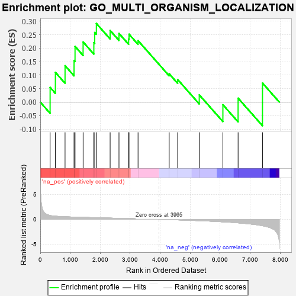
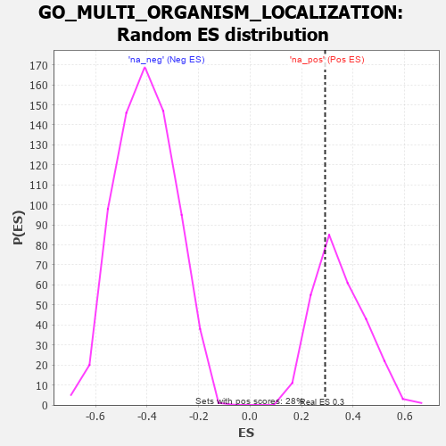

| | | Dataset | 7d |
| Phenotype | NoPhenotypeAvailable |
| Upregulated in class | na_pos |
| GeneSet | GO_MULTI_ORGANISM_LOCALIZATION |
| Enrichment Score (ES) | 0.2915591 |
| Normalized Enrichment Score (NES) | 0.8433049 |
| Nominal p-value | 0.6868327 |
| FDR q-value | 0.8857655 |
| FWER p-Value | 1.0 |
Table: GSEA Results Summary

Fig 1: Enrichment plot: GO_MULTI_ORGANISM_LOCALIZATION
Profile of the Running ES Score & Positions of GeneSet Members on the Rank Ordered List
| PROBE | GENE SYMBOL | GENE_TITLE | RANK IN GENE LIST | RANK METRIC SCORE | RUNNING ES | CORE ENRICHMENT | | 1 | NUP85 | | | 329 | 0.772 | 0.0545 | Yes |
| 2 | NUP54 | | | 505 | 0.627 | 0.1103 | Yes |
| 3 | RAE1 | | | 827 | 0.524 | 0.1350 | Yes |
| 4 | NUP93 | | | 1127 | 0.459 | 0.1543 | Yes |
| 5 | NUP43 | | | 1160 | 0.453 | 0.2065 | Yes |
| 6 | NUP88 | | | 1429 | 0.404 | 0.2229 | Yes |
| 7 | NUP58 | | | 1787 | 0.340 | 0.2202 | Yes |
| 8 | FMR1 | | | 1816 | 0.334 | 0.2582 | Yes |
| 9 | NUP62 | | | 1871 | 0.324 | 0.2916 | Yes |
| 10 | SEC13 | | | 2330 | 0.256 | 0.2657 | No |
| 11 | NUP50 | | | 2625 | 0.209 | 0.2547 | No |
| 12 | NMT2 | | | 2947 | 0.158 | 0.2339 | No |
| 13 | XPO1 | | | 2960 | 0.156 | 0.2517 | No |
| 14 | NUP98 | | | 3261 | 0.112 | 0.2279 | No |
| 15 | RAN | | | 4299 | -0.059 | 0.1049 | No |
| 16 | VPS28 | | | 4582 | -0.114 | 0.0836 | No |
| 17 | RAB7A | | | 5302 | -0.271 | 0.0268 | No |
| 18 | UBB | | | 6090 | -0.503 | -0.0098 | No |
| 19 | TPR | | | 6597 | -0.709 | 0.0146 | No |
| 20 | UBC | | | 7410 | -1.274 | 0.0705 | No |
Table: GSEA details [plain text format]

Fig 2: GO_MULTI_ORGANISM_LOCALIZATION: Random ES distribution
Gene set null distribution of ES for GO_MULTI_ORGANISM_LOCALIZATION